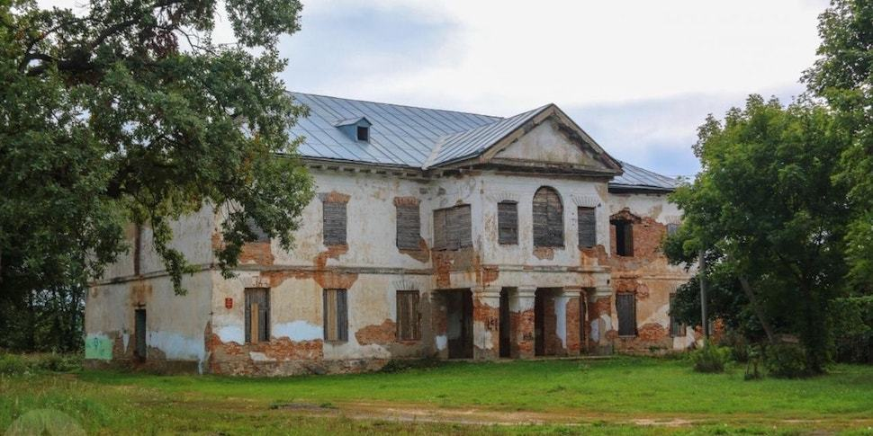
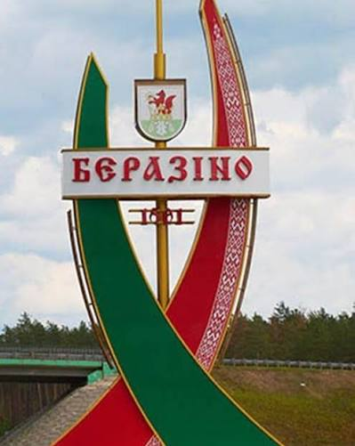
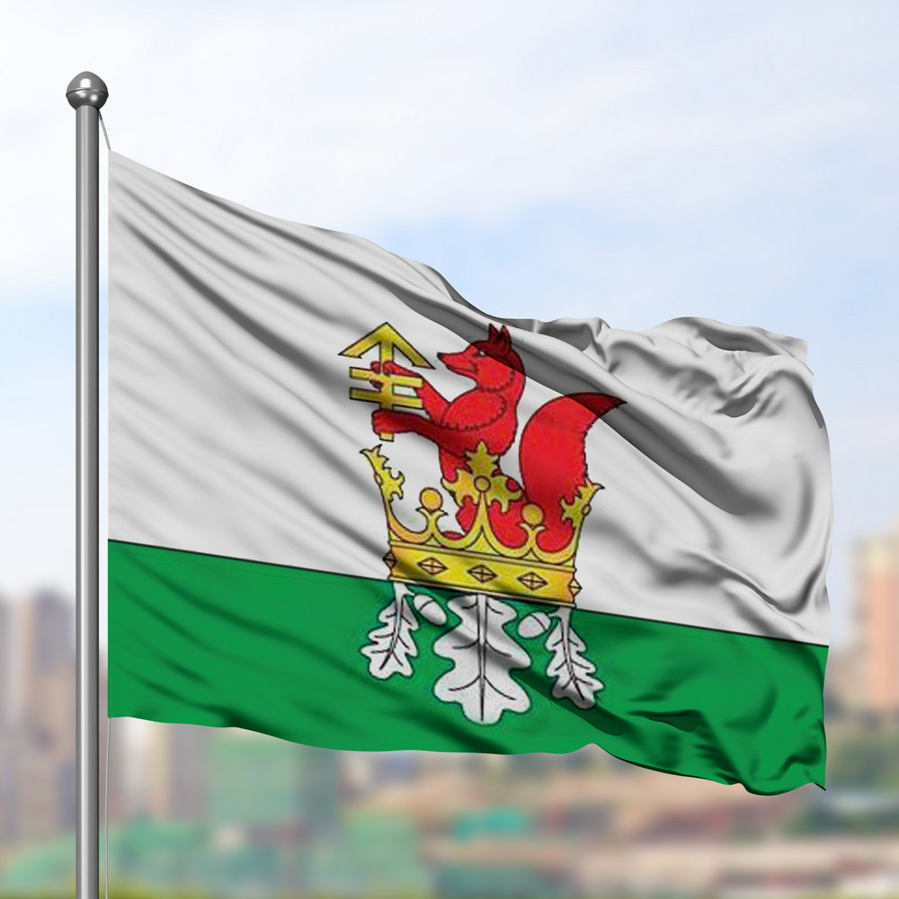
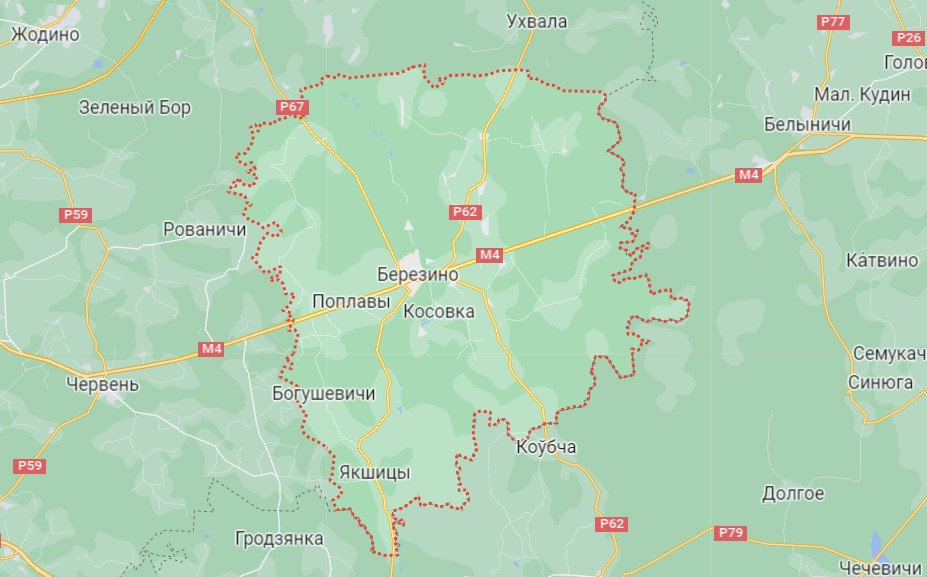
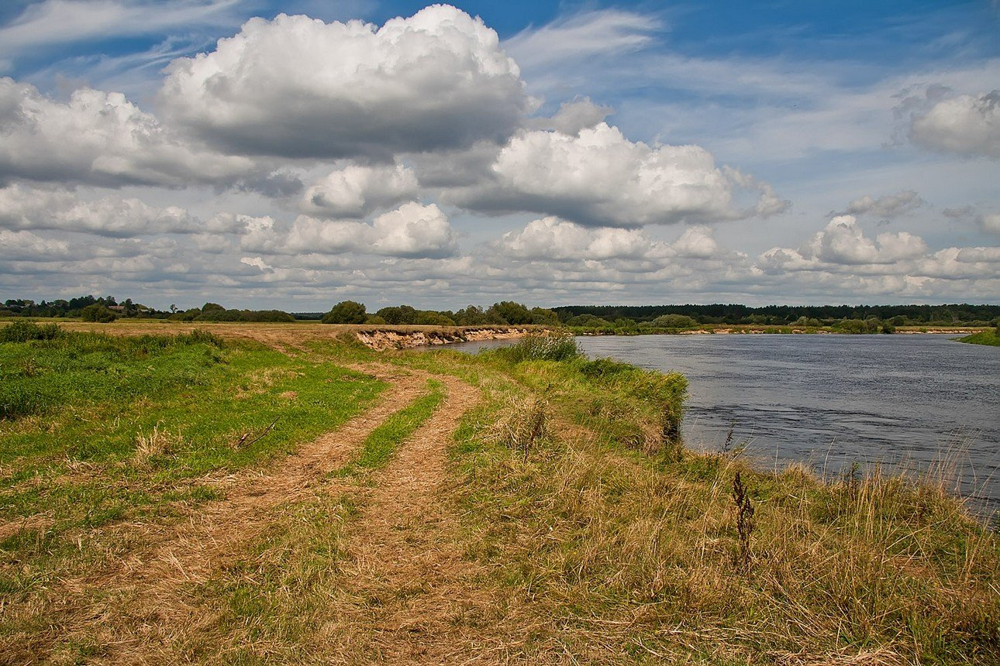

Небольшой обзор моего родного города: от старинной усадьбы на берегу реки до сегодняшних дней.
Город впервые упоминается в документах в 1501 году. Изначально это было небольшое торговое местечко, которому очень повезло с географией: река Березина являлась частью древнего пути «из варяг в греки».
Землями владели знаменитые шляхетские роды — Сапеги, Тышкевичи и Потоцкие. Именно графы Потоцкие возвели здесь известную загородную резиденцию.
Главные исторические места, которые стоит увидеть:

Усадьба Потоцких на набережнойНа официальной символике города изображен золотой натянутый лук со стрелой на серебряно-голубом поле.

Герб
ФлагГород расположен ровно в 100 км от Минска по скоростной магистрали М4 (Минск — Могилёв).

Расположение Березино на карте Минской областиВ парке Начались весенние работы по благоустройству пешеходных аллей и высадке деревьев к открытию летнего сезона.
Городские новости публикуются на портале районной газеты «Бярэзінская панарама».
В городе стабильно работают предприятия пищевой и лесной отрасли: сыродельный комбинат, спиртзавод и крупный лесхоз. Для жителей открыты спортивная школа с бассейном, обновленный стадион и дом культуры.
Главная точка притяжения города — побережье реки Березины. Здесь открываются отличные панорамные виды, особенно во время летних закатов.

Летний берег реки Березины